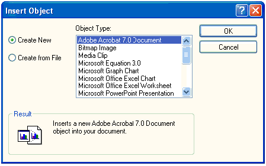
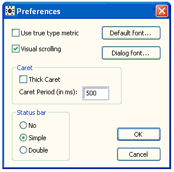

![[editmenu0]](editmenu0.bmp) The Edit Menu
The Edit Menu
Contents
General properties
Undo
Redo
Cut
Copy
Paste
Delete
Paste Object
Paste Special...
Paste to Window
Insert Object...
Object Properties...
Bitmap Image Object
Select Document
Select All
Select Next Object
Preferences...
General properties [top]
The commands in this menu apply to the editing of documents. OpenBUGS is build using a component framework. One component of this framework is a powerful document editor.
Undo [top]
This command un-does the last editing action carried out by the user. The full name of this command changes depending on what type of editing action is to be un-done
Redo [top]
This command restores the last editing action carried out by the user if it has been undone. The full name of this command changes depending on what type of editing action is to be re-done.
Cut [top]
This command cuts the highlighted section of the document to the Windows clip board.
Copy [top]
This command copies the highlighted section of the document to the Windows clip board.
Paste [top]
This command copies the contents of the Windows clip board to the caret position in the document.
Delete [top]
This command deletes the highlighted section from the document.
Paste Object [top]
This command copies the contents of the Windows clip board to the caret position in the document.
Paste Special... [top]
This command copies the contents of the Windows clip board to the caret position in the document. But in addition it allows the user to choose the format in which the object is copied into the document.
Paste to Window [top]
This command copies the contents of the Windows clip board to a new window.
Insert Object... [top]
This command inserts an OLE object at the current caret position. A modal dialog box pops up giving a choice of OLE objects to insert

Object Properties... [top]
This command allows the user to change the font and font style, size, color and effects.
Bitmap Image Object [top]
This command allows the user to open or edit an in-line bitmap image.
Select Document [top]
This command selects the document in the window.
Select All [top]
This command selects the contents of the entire document.
Select Next Object [top]
Preferences... [top]
This command opens a dialog that allows the user to set certain preferences for documents. In addition there is an option that affects the status bar, the line of information at the bottom of the main OpenBUGS window. By default (option Simple) this line just shows error messages, but it can be hidden (option No) or made to show how much memory OpenBUGS is using (option Double). Ticking the thick caret box can make the caret easier to see.
